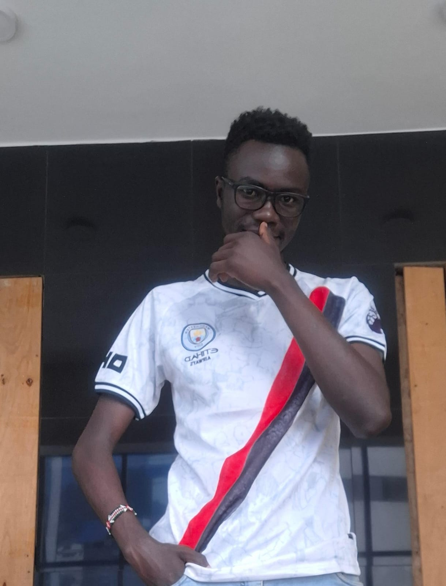

I am KARANI SOLOMON, currently pursuing a Bachelor of Science in Software Engineering at Kisii University.
In addition to my university studies, I have completed short online courses in application development and cybersecurity,
which have helped me build strong technical skills.
I am deeply passionate about software engineering and committed to developing my skills to become a successful professional in the field.